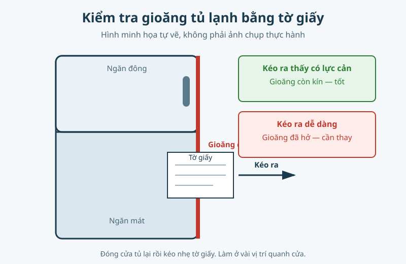

Tủ lạnh ngốn điện: 5 thói quen sai lầm thường gặp
Tác giả: Ruler
Chuyên mục: Tủ lạnh & nhà bếp — Cập nhật: 23/11/2026
Tủ lạnh là thiết bị duy nhất trong nhà chạy suốt ngày đêm, không có nút "nghỉ trưa" như điều hòa hay máy giặt. Vì nó chạy liên tục, một thói quen nhỏ sai mỗi ngày sẽ cộng dồn thành một khoản điện đáng kể sau một tháng. Bài này không nói về việc mua tủ mới. Bài này nói về năm thói quen rất thường gặp trong các gia đình Việt Nam, vì sao mỗi thói quen làm máy nén phải làm việc nhiều hơn, và cách sửa từng thói quen mà không tốn tiền mua thêm đồ mới.
Trước khi vào từng thói quen, cần hiểu một nguyên lý đơn giản. Tủ lạnh làm việc bằng cách lấy nhiệt từ bên trong tủ và thải ra ngoài qua dàn nóng. Khi nhiệt độ trong tủ tăng lên trên mức bạn cài đặt, máy nén sẽ chạy để kéo nhiệt độ xuống lại. Vì vậy, mọi việc làm cho nhiệt lọt vào tủ nhiều hơn, hoặc làm cho nhiệt thải ra ngoài khó hơn, đều làm máy nén chạy lâu hơn. Năm thói quen dưới đây đều rơi vào một trong hai nhóm đó.
Thói quen 1: Vặn lạnh nhất vì nghĩ càng lạnh càng tốt
Nhiều người vặn núm điều chỉnh lên mức cao nhất, hoặc chỉnh ngăn mát xuống mức lạnh nhất có thể, với suy nghĩ rằng càng lạnh thì thực phẩm càng tươi lâu. Suy nghĩ này chỉ đúng một nửa. Thực phẩm cần đủ lạnh để chậm hỏng, nhưng lạnh hơn mức cần thiết không làm thực phẩm tươi lâu hơn đáng kể, mà chỉ làm máy nén phải chạy lâu hơn để duy trì mức lạnh đó.
Cơ quan Quản lý Thực phẩm và Dược phẩm Mỹ (FDA) khuyến cáo giữ nhiệt độ tủ lạnh ở mức 40 độ F trở xuống, tức khoảng 4 độ C trở xuống, và ngăn đông ở mức 0 độ F, tức âm 18 độ C. Nói cách khác, ngăn mát chỉ cần ở mức 4 độ C trở xuống là đã đạt yêu cầu an toàn thực phẩm. Mức 3–4 độ C nằm trong giới hạn này; mức 5 độ C đã vượt ngưỡng 4 độ C của FDA, nên nếu tủ nhà bạn đang ở 5 độ C thì nên giảm nhiệt độ cài đặt xuống. Bộ Năng lượng Mỹ trong tài liệu Energy Saver cũng dùng khoảng 35–38 độ F, tức khoảng 2–3 độ C, cho ngăn mát và 0 độ F cho ngăn đông, nằm trong giới hạn của FDA.
Trong nhà bạn, cách kiểm tra đơn giản nhất không phải là nhìn vào con số trên núm vặn, vì núm vặn của mỗi hãng quy đổi sang độ C khác nhau. Cách chắc chắn hơn là đặt một nhiệt kế nhỏ dùng cho tủ lạnh ở ngăn giữa, để qua một đêm rồi đọc vào sáng hôm sau. Nếu ngăn mát đang ở mức 1–2 độ C trong khi rau củ vẫn tươi, bạn có thể tăng nhiệt độ lên một nấc và theo dõi thêm vài ngày. Nếu rau củ ở ngăn mát bị đông đá nhẹ, hoặc sữa chua bị đóng băng ở mặt trên, đó là dấu hiệu tủ đang lạnh quá mức cần thiết. Ngược lại, nếu sữa nhanh chua, thịt để hai ngày đã có mùi, thì tủ có thể đang chưa đủ lạnh, và bạn cần giảm nhiệt độ xuống, chứ không phải tăng lên.
Với tủ có núm vặn từ 1 đến 5 hoặc 1 đến 7, mức ở khoảng giữa thường là điểm bắt đầu hợp lý cho gia đình dùng bình thường. Mùa nóng hoặc khi tủ chứa nhiều đồ, bạn có thể tăng nhẹ lên một nấc. Khi tủ ít đồ hoặc trời mát, bạn có thể giảm lại. Đừng để tủ ở mức cao nhất quanh năm rồi quên mất, vì đó là cách tốn điện âm thầm nhất.
Thói quen 2: Cho thức ăn còn nóng vào tủ ngay
Cơm vừa nấu xong, canh vừa bắc xuống bếp, thịt vừa kho xong — nhiều người cho ngay vào hộp rồi cất vào tủ lạnh để "cho nhanh nguội". Thói quen này làm nhiệt độ trong tủ tăng lên đột ngột. Một hộp canh nóng đặt vào ngăn mát chẳng khác gì đặt một viên gạch nóng vào trong tủ: máy nén phải chạy mạnh và chạy lâu để kéo nhiệt độ chung của tủ xuống lại mức cài đặt.
Cách sửa rất đơn giản, nhưng cần một chút kiên nhẫn. Hãy để thức ăn nguội bớt ở nhiệt độ phòng trước khi cho vào tủ, đậy nắp hộp lại để hơi nước không bay vào tủ, rồi mới cất. Bạn không cần chờ thức ăn nguội hoàn toàn đến nhiệt độ phòng trong nhiều giờ, vì để thức ăn chín ở ngoài quá lâu cũng không tốt cho an toàn thực phẩm. Chỉ cần chờ đến khi hộp sờ vào không còn nóng rát tay, hơi nước đã bớt bốc lên, là có thể cho vào tủ. Với nồi canh lớn, bạn có thể chia ra hai hộp nhỏ thay vì để nguyên một nồi to, vì hộp nhỏ nguội nhanh hơn và khi cho vào tủ cũng làm nhiệt độ tủ tăng ít hơn.
Một trường hợp liên quan là rã đông thịt cá. Nhiều người rã đông bằng cách để thịt ra ngoài bàn bếp cả buổi, rồi lại cho phần thịt thừa vào tủ. Cách tốt hơn là chuyển thịt từ ngăn đông xuống ngăn mát từ tối hôm trước. Thịt rã đông chậm trong ngăn mát vừa an toàn hơn, vừa giúp ngăn mát "mượn" hơi lạnh từ khối thịt đông để giữ nhiệt, thay vì làm tủ phải chạy thêm để bù nhiệt.
Thói quen 3: Mở cửa nhiều lần, mở lâu, không biết mình tìm gì
Mở tủ lạnh là việc ai cũng làm mỗi ngày, nhưng cách mở mới là vấn đề. Mở cửa để lấy một chai nước thì khác với mở cửa rồi đứng nhìn vào trong tủ năm phút để nghĩ xem tối nay ăn gì. Mỗi lần cửa mở, khí lạnh nặng hơn sẽ tràn ra ngoài ở phía dưới, khí nóng từ bên ngoài sẽ ùa vào phía trên. Tủ càng mở lâu, lượng khí nóng vào càng nhiều, máy nén càng phải chạy lâu để bù lại.
Trong nhiều gia đình, thói quen này gắn với một thói quen khác: không biết đồ để ở đâu trong tủ. Mỗi lần mở tủ là một lần lục tìm, vì đồ đạc xếp lộn xộn, hộp này chồng lên hộp kia, rau củ để lẫn với đồ ăn chín. Cách sửa không nằm ở tủ, mà nằm ở cách xếp đồ. Hãy xếp đồ theo nhóm và theo vị trí cố định: sữa và đồ uống ở một kệ, thức ăn đã nấu ở một kệ, rau củ ở ngăn riêng. Đồ dùng thường xuyên lấy ra thì để ở phía ngoài, dễ với tay. Đồ ít dùng thì để sâu bên trong. Khi đã quen vị trí, bạn mở tủ, lấy đúng thứ cần lấy, đóng lại trong vài giây.
Một mẹo nhỏ khác là viết danh sách đồ trong tủ lên một tờ giấy dán ở cửa tủ, hoặc ghi chú trong điện thoại, mỗi khi lấy đồ ra hay cho đồ vào thì gạch đi hoặc thêm vào. Cách này nghe có vẻ cầu kỳ, nhưng sau một tuần bạn sẽ thấy số lần mở tủ "để xem có gì ăn không" giảm hẳn. Trẻ nhỏ trong nhà cũng nên được nhắc: muốn uống nước thì nói trước mình lấy gì, mở tủ một lần lấy đủ, đừng mở ra đóng vào nhiều lần để chơi.
Thói quen 4: Nhồi quá đầy, hoặc để tủ trống hoàn toàn, lại còn che khe gió
Hai thái cực này tưởng như đối ngược nhau, nhưng đều làm tủ tốn điện theo cùng một nguyên lý: khí lạnh không lưu thông được.
Khi tủ bị nhồi quá đầy, thực phẩm xếp kín đến mức che mất khe gió, khí lạnh không đi đều đến các góc tủ. Chỗ gần khe gió thì lạnh buốt, chỗ xa khe gió thì chưa đủ lạnh, máy nén phải chạy lâu hơn để chỗ xa nhất cũng đạt nhiệt độ cài đặt. Ngoài ra, khi tủ quá đầy, mỗi lần lấy đồ bạn phải bới tung cả tủ lên, cửa mở lâu hơn, khí lạnh mất nhiều hơn.
Khi tủ để trống hoàn toàn hoặc gần như trống, vấn đề lại ngược lại. Tủ lạnh giữ nhiệt tốt hơn khi bên trong có đủ khối thực phẩm lạnh, vì các khối này giúp giữ nhiệt cho nhau khi cửa mở. Tủ trống thì mỗi lần mở cửa, khí lạnh trong tủ mất đi nhiều, máy nén lại phải chạy để làm lạnh lại từ đầu. Một lời khuyên thực hành chung là giữ tủ đầy vừa phải, không để trống hoàn toàn. Bạn chỉ cần hiểu "đầy vừa" là đầy mà vẫn còn khoảng trống để khí lạnh lưu thông, không nhồi kín đến mức che khe gió, cũng không để tủ trống trơn.
Cách xếp đồ đúng là: không xếp đồ sát vào khe gió, để lại khoảng trống phía trên và hai bên cho khí lạnh đi qua, không đặt đồ nóng lên nóc tủ che mất phần tản nhiệt, và thỉnh thoảng dọn tủ để bỏ đồ đã hết hạn. Một lần dọn tủ mỗi tuần, bỏ đi một hộp thức ăn thừa đã quên, cũng là một lần tiết kiệm điện.
Thói quen 5: Kê tủ sát tường, sát bếp, và quên mất gioăng cửa với dàn nóng
Thói quen cuối cùng liên quan đến vị trí đặt tủ và việc bảo dưỡng mà nhiều gia đình bỏ quên nhiều năm liền.
Tủ lạnh thải nhiệt ra ngoài qua dàn nóng, thường nằm ở mặt sau hoặc hai bên hông tủ. Nếu bạn kê tủ sát tường, sát tủ bếp, hoặc nhét tủ vào một hốc vừa khít không còn khe thoáng, khí nóng không thoát ra được, máy nén phải làm việc vất vả hơn để thải nhiệt. Bộ Năng lượng Mỹ gợi ý để vài inch, tức khoảng 10 cm, giữa tủ và tường để dàn ngưng tụ nhận được không khí, và nhấn mạnh cần xem sách hướng dẫn của hãng để biết khoảng cách đúng cho từng mẫu tủ. Con số cụ thể có thể khác nhau tùy theo sách hướng dẫn của từng hãng, nên bạn nên đối chiếu với sách hướng dẫn của chính chiếc tủ nhà mình. Nguyên tắc chung thì không đổi: tủ cần khoảng trống để thở.
Đặt tủ gần bếp gas, lò nướng, hoặc nơi có ánh nắng chiếu trực tiếp cũng gây ra vấn đề tương tự. Nhiệt từ bếp và nắng làm nhiệt độ xung quanh tủ tăng lên, tủ phải chạy nhiều hơn để giữ lạnh bên trong. Nếu bếp nhà bạn nhỏ và không còn chỗ nào khác để đặt tủ, hãy cố gắng để tủ cách bếp ít nhất một khoảng, dùng rèm che nắng cho cửa sổ gần tủ, và không đặt lò vi sóng hay nồi cơm điện lên nóc tủ.
Gioăng cao su ở cửa tủ là bộ phận nhỏ nhưng quan trọng không kém. Gioăng có nhiệm vụ giữ khí lạnh không lọt ra ngoài. Sau vài năm dùng, gioăng có thể bị cứng, nứt, bám bẩn, hoặc hở ở một góc mà bạn không để ý. Cách kiểm tra đơn giản mà Bộ Năng lượng Mỹ gợi ý là kẹp một tờ giấy mỏng vào cửa tủ rồi đóng lại. Nếu bạn kéo tờ giấy ra quá dễ dàng, gioăng có thể đã bị hở và cần được vệ sinh hoặc thay mới. Bạn cũng nên lau gioăng bằng khăn ẩm mỗi tháng một lần để bụi bẩn và vụn thức ăn không làm gioăng mất độ kín.

Dàn nóng bám bụi cũng là một nguyên nhân hay bị quên. Bụi bám dày trên dàn nóng làm khả năng tản nhiệt giảm xuống. Bạn có thể rút điện, dùng chổi mềm hoặc máy hút bụi để làm sạch bụi ở mặt sau tủ vài tháng một lần, theo hướng dẫn của hãng. Nếu tủ nhà bạn có tiếng máy nén kêu to bất thường, chạy liên tục không ngắt, hoặc mặt sau tủ nóng rát tay, hãy gọi thợ kiểm tra thay vì tự tháo máy.
Bảng tự kiểm tra trong 10 phút cuối tuần
| Việc kiểm tra | Cách làm | Nếu phát hiện vấn đề |
|---|---|---|
| Nhiệt độ ngăn mát | Đặt nhiệt kế tủ lạnh qua đêm, đọc vào sáng hôm sau | Ngăn mát trên 4 độ C thì giảm nhiệt độ xuống; dưới 2 độ C và rau bị đông thì tăng lên |
| Gioăng cửa | Kẹp tờ giấy mỏng vào cửa, đóng lại rồi kéo ra | Kéo ra quá dễ thì lau sạch gioăng, kiểm tra chỗ hở, cân nhắc thay gioăng |
| Khoảng trống sau tủ | Đo khoảng cách từ tủ đến tường | Dưới 10 cm hoặc bị bịt kín thì kê tủ ra, dọn vật cản |
| Khe gió trong tủ | Nhìn xem có hộp nào che kín khe gió không | Xếp lại đồ, để trống khe gió |
| Thức ăn nóng | Nhớ lại hôm nay có cho đồ nóng vào tủ không | Lần sau để nguội bớt, đậy nắp rồi mới cất |
Kết luận
Năm thói quen trên đều không cần mua thiết bị mới để sửa. Vặn nhiệt độ về mức vừa đủ, để thức ăn nguội bớt rồi mới cất, mở tủ nhanh và biết mình lấy gì, giữ tủ đầy vừa phải và không che khe gió, kê tủ thoáng và chăm gioăng cửa — mỗi việc chỉ mất vài phút, nhưng cộng lại sẽ làm máy nén chạy ít hơn mỗi ngày. Tủ lạnh chạy 24 giờ mỗi ngày, nên một thói quen tốt lặp lại mỗi ngày sẽ có giá trị hơn một lần mua sắm đắt tiền rồi lại dùng sai cách. Hãy bắt đầu từ thói quen dễ nhất với nhà bạn trong tuần này, và theo dõi xem tủ có chạy êm hơn, ít kêu hơn sau vài ngày hay không.
Nguồn tham khảo
- Cơ quan Quản lý Thực phẩm và Dược phẩm Mỹ (FDA), "Are You Storing Food Safely?" — giữ nhiệt độ tủ lạnh ở mức 40 độ F (4 độ C) trở xuống, ngăn đông ở mức 0 độ F (âm 18 độ C); dùng nhiệt kế để kiểm tra nhiệt độ thực trong tủ (truy cập 23/11/2026): https://www.fda.gov/consumers/consumer-updates/are-you-storing-food-safely
- Bộ Năng lượng Mỹ (DOE), "Energy Saver: Tips on Saving Money and Energy in Your Home" — giữ tủ lạnh ở khoảng 35–38 độ F, ngăn đông ở 0 độ F để tiết kiệm điện; kiểm tra gioăng cửa bằng cách kẹp một tờ tiền vào cửa rồi đóng lại, nếu kéo ra dễ dàng thì gioăng cần được thay; để khoảng trống giữa tủ và tường cho dàn ngưng tụ tản nhiệt (truy cập 23/11/2026): https://www.energy.gov/sites/prod/files/2022-08/energy-saver-guide-2022.pdf
- Bộ Năng lượng Mỹ (DOE), "Sustainability Treasure Hunt from Home" — giữ tủ lạnh ở 35–38 độ F và ngăn đông ở 0 độ F; kiểm tra gioăng bằng tờ giấy, để vài inch giữa tủ và tường để dàn ngưng tụ nhận được không khí (truy cập 23/11/2026): https://www.energy.gov/management/osp/articles/sustainability-treasure-hunt-home